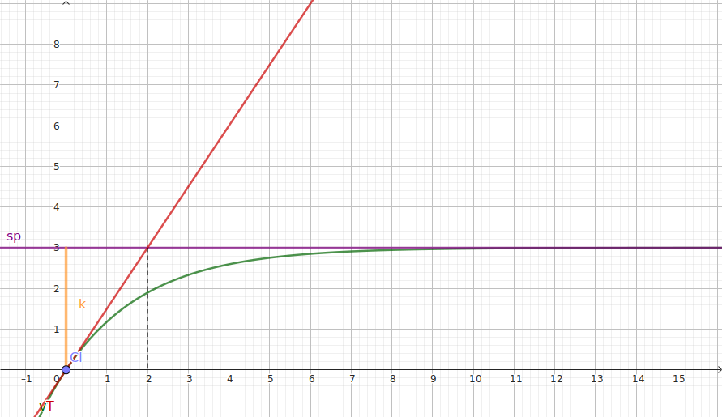
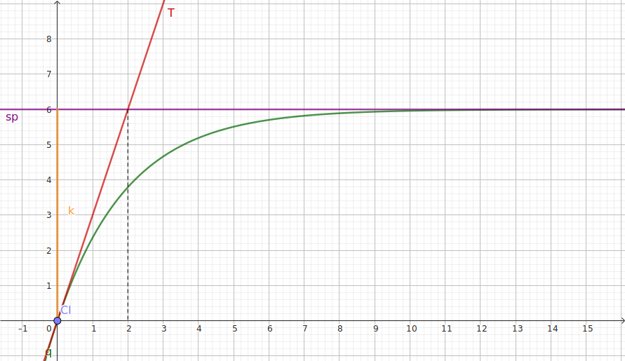

Une équation différentielle est une équation dont l'inconnue est une fonction ; l'équation
est
dite différentielle car elle fait apparaître un lien entre la ou les dérivée(s) de la fonction et la
fonction
elle-même.
Dans ce chapitre, on étudie les équations différentielles, dites du premier ordre (c'est
l'ordre maximal de dérivation apparaissant dans l'équation) de la forme :
\((E) : y'(t)=ay(t)+h(t)\) où
\(y(t)\) est une fonction dérivable que l'on cherche à trouver.
\(a\in\mathbb{R^*}\) est une constante (non nulle).
\(h(t)\) est une fonction donnée.
On note \((E_0) : y'(t)=ay(t)\) l'équation homogène
associée à \((E)\). Elle est obtenue en «oubliant» le terme \(h(t)\), seul terme qui ne contient pas \(y\)
ou
\(y'\).
Une fonction donnée vérifiant \((E)\) est appelée solution particulière de
\((E)\).
Pour les équations étudiés ici, on recherche des solutions qui sont des fonctions définies sur
\(\mathbb{R}\) entier (bien que la partie \(t\geqslant 0\) soit suffisante pour les problèmes
étudiés en
spécialité sciences physiques).
Il y a une infinité de solutions en général.
Une formule donnant un paramétrage de toutes les fonctions solutions de \(E\) est appelée
solution générale de \((E)\).
On prend \(a\neq 0\) car sinon le problème revient à rechercher les primitives de \(h(t)\).
La variable est en général notée \(t\) car les équations différentielles apparaîssent naturellement
en
modélisant des phénomènes évoluant au cours du temps.
Lorsqu'il n'y a absolument aucune ambiguïté, on peut omettre la variable notée entre parenthèses
pour
les fonctions : \(y'=ay+h\)
\((E) : 3y'(t)+15y(t)=30t+12\)
Isoler le terme \(y'\) dans le membre de gauche.
\(3y'=-15y+30t+12\) donc \(y'=-5y+10t+4\).
Déterminer \(a\), \(h(t)\) et l'équation homogène \((E_0)\) associée à \((E)\).
On lit : \(a=-5\) et \(h(t)=10t+4\) pour \((E)\).
L'équation homogène associée à \((E)\) est donc
\((E_0) : y'=-5y\).
Démontrer que \(f(t)=2t+0{,}4\) est une solution (particulière) de \((E)\).
On remplace \(y\) par \(f\) et on vérifie que l'égalitée est vraie :
Dans le membre de gauche :
\(f'(t)=2\)
Dans le membre de droite :
\(-5f+10t+4=-5\times (2t+0{,}4)+10t+4=\cancel{-10t}-2+\cancel{10t}+4=2\)
Donc \(f\) est bien une solution particulière de \((E)\)
Remarque :
On pourrait démontrer de la même manière que pour toute valeur de \(k\in\mathbb{R}\), la fonction
\(f_k(t)=2t+0{,}4+k\textrm{e}^{-5t}\) est aussi une solution de \(E\). Cette formule est une solution
générale de \((E)\).
Recherche de solutions particulières
C'est un problème difficile. Quelques pistes :
Le plus souvent, une solution particulière est donnée et il est demandé de la vérifer.
Les solutions particulières sont de la «même forme» que la fonction \(h(t)\), on peut utiliser des
méthodes d'identifications des coefficients.
Par exemple, dans l'exercice précédent, il aurait été possible de chercher la solution sous la forme
\(f(t)=At+B\).
On peut utiliser un logiciel de calcul formel.
Dans le supérieur, on peut utiliser la transformation de Laplace (qui peut être un sujet de grand
oral).
Solutions particulières de \(y'(t)=ay(t)+c\) (cas \(h(t)=c\) constante)
Lorsque la fonction \(h(t)\) est une constante (notée \(c\)), l'équation différentielle \((E)\) admet
toujours
une solution particulière constante.
Pour la trouver, comme \(y(t)\) est constante, il suffit de remplacer, dans \((E)\), \(y'\) par 0 :
\(0=y'=ay+c\) donc \(y=\dfrac{-c}{a}\).
Trouver une solution particulière de chacune des équations différentielles suivantes : \((E1) : y'=2y+10\)
et
\((E_2) : 4y'+3y=15\).
On recherche une solution \(y\) constante, d'où \(y'=0\), donc :
\(0=y'=2y+10\) donc \(y=\dfrac{-10}{2}=-5\) est solution particulière (constante) de \((E1)\).
On recherche une solution \(y\) constante, d'où \(y'=0\), donc :
\(\cancel{4\times 0}+3y=15\) donc \(y=\dfrac{15}{3}=5\) est solution particulière (constante) de
\((E2)\).
Cette solution particulière constante forme une asymptote de n'importe quelle autre solution de l'équation
différentielle. Physiquement, elle correspond à une situation d'équilibre (cf la suite du cours).
Solutions de l'équation homogène \(y'(t)=ay(t)\)
L'écart entre deux solutions particulières d'une équation différentielle \((E) : y'(t)=ay(t)+h(t)\)
est une solution de l'équation homogène associée \((E_0) : y'(t)=ay(t)\).
Démonstration
On note \(f\) et \(g\) deux solutions de l'équation différentielle
\((E) : y'(t)=ay(t)+h(t)\) et on note \(d(t)=f(t)-g(t)\) leur écart en fonction de \(t\). Démontrer que
\(d\)
est solution de \((E_0)\).
\(d'=(f-g)'=f'-g'=(af+h)-(ag+h)=af+\cancel{h}-ag-\cancel{h}=a(f-g)=ad\) donc on a bien \(d'=ad\) et
\(d\)
est solution de \((E_0)\).
Cette propriété permet d'«étendre» une solution particulière aux solutions générales dès lors que l'on
connaît
les solutions de l'équations homogène associée.
Les solutions d'une équations différentielle homogène \((E_0) : y'=ay\) sont les fonctions
\(t\mapsto
k\mathrm{e}^{at}\) avec \(k\in\mathbb{R}\) (\(k\) est une constante).
On peut appeler ces solutions «solutions homogènes».
Démonstration :
Vérifier que ces fonctions sont des solutions de \((E_0)\)
On note \(g(t)=k\textrm{e}^{at}\) ; on a :
\(g'(t)=\left(k\textrm{e}^{at}\right)'=ka\textrm{e}^{at}=a\left(k\textrm{e}^{at}\right)=ag(t)\)
donc
ces fonctions sont bien solutions, pour tout \(k\in\mathbb{R}\).
Vérifions que ce sont les seules solutions : on note \(f(t)\) une solution de \((E_0)\) (sur
\(\mathbb{R}\)), et on pose \(u(t)=f(t)\textrm{e}^{-at}\).
Dériver \(u(t)\) et en déduire que \(u\) est constante sur \(\mathbb{R}\), et vaut \(f(0)\).
Avec la règle de dérivation du produit, et en utilisant \(f'=af\) (car \(f\) est une solution de
\((E_0)\)) :
\(
u'(t)
=f'(t)\textrm{e}^{-at}-af(t)\textrm{e}^{-at}
=af(t)\textrm{e}^{-at}-af(t)\textrm{e}^{-at}
=0
\) donc \(u\) est constante et vaut \(u(0)=f(0)\textrm{e}^{-a\times 0}=f(0)\times 1=f(0)\).
On note \(k\) le réel \(f(0)\). En déduire que pour tout \(t\) réel, \(f(t)=k\textrm{e}^{at}\) et
conclure.
\(u(t)=f(t)\textrm{e}^{-at}\) ; en multipliant par \(\textrm{e}^{at}>0\), on a :
\(f(t)=u(t)\textrm{e}^{at}=f(0)\textrm{e}^{at}=k\textrm{e}^{at}\). On a démontré qu'il n'y a pas
d'autres solutions que les \(k\textrm{e}^{at}\) avec (\(k\in\mathbb{R}\)).
Solutions générales
Résoudre \((E1) : y'=2y+10\). L'obtention des solutions générales se mène en trois étapes :
Trouver les solutions homogènes :
L'équation homogène associée est \((E1_0) : y'=2y\) donc \(a=2\) ; les solutions homogènes sont donc
les
\(k\textrm{e}^{at}=k\textrm{e}^{2t}\).
Trouver une solution particulière :
Le terme non homogène de \((E1) : 2y+\textbf{10}\), qui est 10 est constant donc on peut rechercher
une
solution constante (\(y'=0\))
:
\(0 = 2y + 10\) donc \(y=\frac{-10}{2}=-5\).
Superposer (ajouter) les solutions homogènes et les solutions particulières pour obtenir les
solutions générales (paramétrées par \(k\in\mathbb{R}\)) :
Les solutions générales sont : \(-5+k\textrm{e}^{2t}\)
Déterminer les solutions générales des équations différentielles suivantes :
\((EB) : v'(t)=1{,}5-0{,}5v(t)\) désigne la vitesse de chute d'un ballon de baudruche (soumis à des
frottements avec l'air) en fonction du temps.
Hom : \((EB_0) : v'=-0{,}5v\) ⇒ solutions hom :
\(k\textrm{e}^{-0{,}5t}\). Part : terme non hom. constant ⇒ solution \(v\) constante,
\(v'=0=1{,}5-0{,}5v\)
donc \(v=\frac{-1{,}5}{-0{,}5}=3\) Sup : solutions générales : \(3+k\textrm{e}^{-0{,}5t}\) avec \(k\) réel.
\((ERC) : Rq'(t)+\dfrac{q(t)}{C}=12\) désigne la charge q d'un condensateur de capacité C, en
fonction
du temps à travers une
résistance R par une source de tension de 12 volts. On pourra prendre R=4 ohm et C = 0,5 farad (=
énorme
accumulateur de charge) pour les calculs.
\((ERC) : q'(t)=\dfrac{12}{R}-\dfrac{q(t)}{RC}\) Hom : \((ERC_0) : q'(t)=-\dfrac{q(t)}{RC}\) ⇒ solutions hom :
\(k\textrm{e}^{\frac{-t}{RC}}\). Part : terme non hom. constant ⇒ solution \(q\) constante,
\(q'=0=\dfrac{12}{R}-\dfrac{q(t)}{RC}\)
donc \(\dfrac{q(t)}{\cancel{R}C}=\dfrac{12}{\cancel{R}}\) donc \(q(t)=12C\) Sup : solutions générales :
\(12C+k\textrm{e}^{\frac{-t}{RC}}=6+k\textrm{e}^{-0{,}5t}\) avec \(k\) réel.
Conditions initiales ou particulières
Vocabulaire de sciences physiques :
La donnée, en \(t=0\), d'une valeur de la fonction recherchée s'appelle une condition
initiale (en un \(t\neq 0\) on parle de condition
particulière).
La donnée d'une condition initiale ou particulière permet de sélectionner la solution au
problème posé parmi les solutions générales en fixant (une valeur pour) la constante \(k\).
Ainsi, on remplace, dans la formule donnant les solutions générales, \(t\) et \(y(t)\) par leurs valeurs
données
et on
calcule \(k\). Il suffit ensuite de réécrire la solution voulue avec la valeur de \(k\) calculée.
\((EB) : v'(t)=1{,}5-0{,}5v(t)\) pour \(v(0)=0\) et \(v(0)=5\)
Pour \(v(0)=0\) :
On a \(0=v(0)=3+k\textrm{e}^{-0{,}5\times 0}=3+k\) donc
\(k=-3\) et \(v(t)=3-3\textrm{e}^{-0{,}5t}=3\left(1-\textrm{e}^{-0{,}5t}\right)\) est la
solution correspondant à cette condition initiale.
Pour \(v(0)=5\) :
On a \(5=v(0)=3+k\textrm{e}^{-0{,}5\times 0}=3+k\) donc
\(k=5-3=2\) et \(v(t)=3+2\textrm{e}^{-0{,}5t}\) est la solution correspondant à cette
condition initiale. Page Géogebra.
\((ERC) : Rq'(t)+\dfrac{q(t)}{C}=12\) pour \(q(0)=0\) et \(q(0)=3\)
Pour \(q(0)=0\) :
On a \(0=q(0)=6+k\textrm{e}^{-0{,}5\times 0}=6+k\) donc
\(k=-6\) et \(q(t)=6-6\textrm{e}^{-0{,}5t}=6\left(1-\textrm{e}^{-0{,}5t}\right)\) est la
solution correspondant à cette condition initiale.
Pour \(q(0)=3\) :
On a \(3=v(0)=6+k\textrm{e}^{-0{,}5\times 0}=6+k\) donc
\(k=3-6=-3\) et \(q(t)=6-3\textrm{e}^{-0{,}5t}\) est la solution correspondant à cette
condition initiale. Page Géogebra.
Dynamique des solutions
Conjecture
Les courbes 1 et 2 représentant les solutions de (EB) et de (ERC) pour les conditions initiales \(v(0)=0\)
et
\(q(0)=0\) sont tracées ici, ainsi que leurs tangentes T en t=0 et leur asymptotes horizontales en l'infini
:

Courbe 1 (Page Géogebra) :
\(v(t)=3-3\textrm{e}^{-0{,}5t}\)

Courbe 2 (Page Géogebra) :
\(q(t)=6-6\textrm{e}^{-0{,}5t}\)
On peut remarquer que ces courbes ont une même forme, et chacune possède une asymptote horizontale
correspondant
à la solution particulière constante trouvée lors de la résolution.
De plus la tangente en t=0 coupe cette asymptote en un point de coordonnées dont l'abscisse est
\(\frac{-1}{a}\).
Vérifier que les coordonnées du point d'intersection de la tangente T en t=0 à la courbe de \(v\) et de son
asymptote horizontale est bien \(\left(\frac{-1}{a};3\right)\)
Ce point étant sur l'asymptote d'équation \(y=3\), son ordonnée est bien 3.
Déterminons l'équation de \(T : v'(0)(t-0)+v(0)\). On a \(v(0)=0\) (condition initiale) et, d'après
(EB),
\(v'(0)=1{,}5-\cancel{0{,}5v(0)}\) donc \(T : 1,5t\). En résolvant
\(\left\{\begin{array}{lr}
y=1,5t & \textrm{(T)}\\
y=3 & \textrm{(asymptote)}\\
\end{array}\right.\), on a \(t=2\), ce qui correspond bien à \(\frac{-1}{a}=\frac{-1}{-0{,}5}\).
Dans une équation différentielle \(y'(t)=ay(t)+h(t)\), on appelle constante de temps et on
note
\(\tau\) le nombre, homogène à un temps, égal à \(\dfrac{-1}{a}\).
Calculer et exprimer en pourcentage (à 1% près) les valeurs \(\dfrac{v(n\tau)}{3}\) pour
\(n\in\left\{0;1;2;3;4;5;6\right\}\). On pourra vérfier que l'on obtient les mêmes valeurs pour la seconde
fonction (\(q\)).
cf la partie suivante pour retrouver ces pourcentages.
Cas général : équation \(y'=ay+c\), constante de temps \(\tau\), régimes
En appliquant la méthode de résolution à l'équation différentielle \(y'=ay+c\), on obtient ses
solutions
générales \(y(t)=\dfrac{-c}{a}+k\textrm{e}^{at}\)
En notant \(\tau=\frac{-1}{a}\), elles deviennent : \(y(t)=c\tau+k\textrm{e}^{\frac{-t}{\tau}}\).
On étudie dans la très grande majorité des cas des systèmes physiques qui se stabilisent dans le
temps,
ce qui correspond à \(a<0\), et, de manière équivalente, à \(\tau>0\). Dans ce cas :
\(\displaystyle\lim_{t\to+\infty}y(t)=c\tau\) : quelque soit la condition initiale choisie, la
solution
\(y(t)\) tend vers la solution particulière constante \(y_p=c\tau\). La solution particulière constante représente donc un état d'équilibre vers lequel le système
étudié
tend.
Le terme en \(k\textrm{e}^{\frac{-t}{\tau}}\), solution de l'équation homogène associée, tend vers 0
au
cours du temps, d'autant plus vite que
\(\tau\) et \(k\) sont petits. les solutions homogènes rendent comptent du passage d'un ètat initial du système à son état
d'équilibre.
Comme \(y(0)=c\tau+k\), le paramètre \(k\) mesure l'écart initial entre la valeur initiale \(y(0)\)
et
la
valeur limite \(c\tau\).
On peut, en calculant, pour \(t=n\tau\) avec \(n\) entier (et en l'exprimant en pourcentage) la
quantité
:
\(\dfrac{c\tau-y(t)}{k}=\dfrac{\cancel{k}\textrm{e}^{\frac{-t}{\tau}}}{\cancel{k}}=\textrm{e}^{\frac{-n\cancel{\tau}}{\cancel{\tau}}}\)
, jauger de l'écart relatif entre la solution à un instant et sa position limite :
\(t=n\tau\)
0
𝜏
2𝜏
3𝜏
4𝜏
5𝜏
6𝜏
15𝜏
\(\dfrac{c\tau-y(t)}{k}=\textrm{e}^{-n}\)
100%
36,8%
13,5%
5,0%
1,8%
0,7%
0,25%
3.10-5%
Le nombre de 𝜏 écoulés est un indicateur fondamental de l'écart du système avec sa position
d'équilibre au cours du temps.
𝜏 peut être obtenu graphiquement comme abscisse du point d'intersection de l'asymptote avec
la tangente à la courbe de la solution en t=0.
Démonstration
En dérivant \(y(t)=c\tau+k\textrm{e}^{\frac{-t}{\tau}}\), démontrer que \(y'(0)=\frac{-k}{\tau}\).
\(y'(t)=0+k\frac{-1}{\tau}\textrm{e}^{\frac{-t}{\tau}}\) donc pour \(t=0\), on a
\(y'(0)=\frac{-k}{\tau}\)
En déduire l'équation de la tangente T en t=0 à la courbe de la solution (en fonction de t, c, k et
𝜏).
\(y(0)=c\tau+k\) donc \(T : y=y'(0)(t-0)+y(0)=\frac{-k}{\tau}t+c\tau+k\)
Conclure.
L'ordonnée du point d'abscisse 𝜏 de cette tangente T est bien :
\(\frac{-k}{\cancel{\tau}}\cancel{\tau}+c\tau+k=c\tau\) donc correspond bien à l'asymptote
horizontale.
On appelle :
Régime transitoire l'intervalle de temps \(\left[0;5\tau\right[\).
Régime permanent l'intervalle de temps \(\left[5\tau;+\infty\right[\).
Problèmes
Lorsqu'une réaction chimique suit une loi de vitesse d’ordre 1, la concentration molaire \(\left[A\right]\)
du
réactif \(A\) diminue selon l’équation différentielle suivante :
\(\dfrac{\textrm{d}\left[A\right](t)}{\textrm{d}t}+K\left[A\right](t)=0\)
Équation de la réaction modélisant la transformation chimique de synthèse du méthanal (formol) :
CH3OH → H2CO + H2 ; \(K=2\) ; le temps est en minutes et
[CH3OH]=0,30 mol/L.
Déterminer la concentration en fonction du temps.
Un parachutiste saute d'une hauteur \(x(0)=8\,500\) m sans vitesse initiale et ouvre son parachute au bout
de
120 s. Son poids \(\overrightarrow{P}=m\overrightarrow{g}\) est conditionné par l'accélération de pesanteur
\(\overrightarrow{g}\), vers le bas, de norme 10 m/s2. On considère que le parachutiste subit les
frottements linéaires de l'air de coefficients \(K_1=0{,}15\) lors de la chute libre puis \(K_2=10\) après
l'ouverture du parachute.
Le principe fondamental de la dynamique Newtonienne conduit à : \((E)~:~~v'+K_{1|2}v=g\)
Résoudre l'équation différentielle \((E)\) et tracer les courbes de position, vitesse et accélération du
parachutiste.
ChampVecteurs[ f(x,y) ]
Représente un champ de vecteurs pour l'équation différentielle \( \mathrm{\mathsf{\frac{dy}{dx}=f(x,y)}} \).
Attention la variable utilisée par GéoGebra est \(x\) et non \(t\)...
ChampVecteurs[x+2y] représente le champ de vecteurs pour \(y'(x)=x+y(x)\)
RésolEquaDiff
Résolution numérique : RésolEquaDiff[ f(x,y), x initial, y initial, x final, pas ] résout
numériquement une équation différentielle d'ordre un : \(\mathrm{\mathsf{\frac{dy}{dx}=f(x,y)}}\)
à partir d'un point donné par ses coordonnées, avec un pas donné.
Résolution formelle : RésolEquaDiff[ f(x, y) ]
essaye de trouver la solution exacte de l'équation différentielle d'ordre un
\(\mathrm{\mathsf{\frac{dy}{dx}(x)=f(x,y(x))}}\)